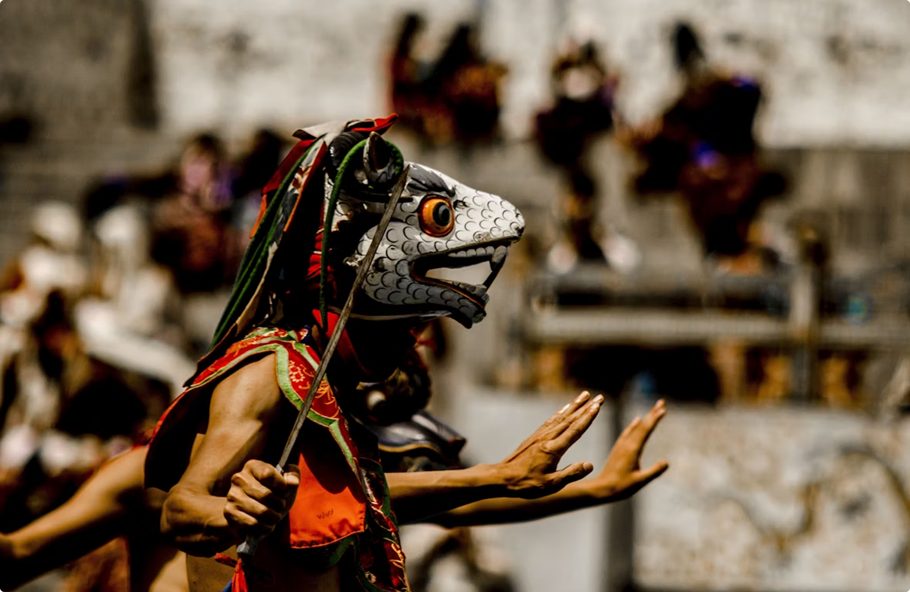

Thimphu Tshechu (Festival of Mask Dances)

Embark on a spiritually enriching journey through Bhutan’s sacred heartlands — where every valley echoes with chants, and every trail leads to quiet introspection. This deeply immersive tour invites you to explore ancient temples nestled in misty hillsides, hike peaceful forest paths once walked by monks and mystics, and participate in rituals still practiced in remote, cliffside monasteries rarely visited by tourists. Along the way, engage with Bhutanese spiritual guides, receive traditional blessings, and find space to reconnect — with nature, with culture, and with yourself. Ideal for those seeking peace, meaning, and the profound serenity only Bhutan can offer.
Day 1 – Arrival in Paro & Transfer to Thimphu keyboard_arrow_down
Begin your journey with your arrival at Paro International Airport, where your guide will welcome you and help complete arrival formalities. After lunch in Paro town, enjoy a scenic 1½-hour drive into the Thimphu valley, passing the Pachu River and taking in your first views of the Bhutanese landscape. On arrival in the capital, check into your hotel, relax, and in the afternoon explore the imposing Tashichho Dzong — a spectacular fortress-monastery that houses both government offices and monastic quarters. Wander through its courtyards, admire its wood carvings and traditional architecture, then stroll through the nearby weekend market or handicraft handicrafts shops to soak in local life.
Day 2 – First Day at Thimphu Tshechu keyboard_arrow_down
Rise with excitement for your first full day at the Thimphu Tshechu, held in the courtyard of Tashichho Dzong. From morning until the afternoon you’ll witness a vivid display of masked cham dances, processions of brightly-robed monks and lay performers, and the joyous gathering of locals dressed in their finest gho and kira. The energy is both festive and deeply spiritual. After mid-day you may choose to remain for the afternoon performances or take a short excursion to the nearby National Library or Folk Heritage Museum, learning more about Bhutan’s living traditions and textile arts. Evening is free for dinner and to reflect on the day’s experience.
Day 3 – Second Festival Day & Thimphu Sights keyboard_arrow_down
Return to the festival venue for Day 2 of the celebrations, where you’ll again be surrounded by the thunderous beats of traditional drums, swirling costumes, and the shifting hues of bhutanese ritual. If your arrival allows, early morning could also include the unfurling of the sacred thongdrol (giant thangka) — a moment of solemnity amidst colour and sound. In the afternoon branch out from the festival grounds to explore more of Thimphu: visit the Textile Museum to see Bhutan’s exquisite weaving traditions, drop by the Memorial Chorten for a peaceful walk amid locals offering prayers, or visit the Takin Sanctuary to glimpse Bhutan’s national animal. Evening at leisure.
Day 4 – Thimphu to Punakha via Dochu La keyboard_arrow_down
Leaving Thimphu behind, your journey continues to the picturesque valley of Punakha Valley. En route, you’ll ascend to the scenic Dochu La Pass (3,100 m), marked by 108 chortens and magnificent Himalayan vistas. Pause for photos and refreshments amid the fluttering prayer flags. Descending into the subtropical Punakha region, check into your lodge and then visit the majestic Punakha Dzong, perched between two rivers and rich in historical and spiritual significance. A gentle evening stroll along the river or through the village will bring the day to its close.
Day 5 – Punakha Exploration & Return to Paro keyboard_arrow_down
Spend your morning exploring Punakha’s charms: perhaps take a short walk to the lovely suspension bridge or visit the fertility temple of Chimi Lhakhang. After lunch, begin your drive back to Paro. On arrival, if time allows, you may visit the impressive Paro Rinpung Dzong or the quaint village of Kyichu before settling into your hotel for the evening.
Day 6 – Departure keyboard_arrow_down
On your final morning, enjoy a relaxed breakfast and some free time in Paro for last-minute shopping or a short visit to the town’s craft-shops. When ready, your guide will transfer you to Paro International Airport for your flight home, taking forward memories of one of the world’s most extraordinary cultural journeys.
The Thimphu Tshechu is an extraordinary cultural and spiritual celebration, held each autumn in Bhutan’s capital city, and set against the iconic backdrop of the Tashichho Dzong. It brings together monks in vivid brocade robes, masked dancers performing ancient cham rituals, and locals who arrive in their finest traditional dress. The festival is a feast for the senses — the rhythmic beating of drums and horns, the flutter of colourful prayer flags, the hush that falls when the sacred thongdrol (giant thangka) is revealed — all combine to make this a deeply moving experience.
Beyond the spectacle, the festival is steeped in meaning. Every movement of the dance, every mask, every ritual is rooted in Bhutanese Buddhist tradition — many performances depict the triumph of good over evil, stories of the revered master Guru Rinpoche (Padmasambhava), and the values of compassion and wisdom.
It is a moment when communities gather in shared devotion, when remote villages and city dwellers alike converge in the valley, and visitors can witness a living heritage that remains vibrant, authentic and profound